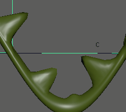
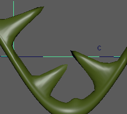

- 在“建模”(Modeling)、“绑定”(Rigging)和“动画”(Animation)菜单集中：“变形 > (创建)固化”(Deform > (Create) Solidify) >

注： 其中 *（星号）显示为一个值，它表示一个完整（或包容）值，其中包含受影响多边形的每个顶点。
基本
- 附件模式(Attachment Mode)
- 通过指定您希望固化变形的面孤岛接合几何体的方式，选择几何体受影响的方式。
-
- 边框
- 当您希望面孤岛绕非实体几何体旋转时，选择“边界”(Borders)作为附件模式。以弯曲的龙尾部上的硬钉形为例，建议使用“边界”(Borders)附件模式，因为这样实心钉形将从接合尾部的边发出。
- “全剖”
- 变形从受影响顶点的中心向周围扩展。如果是带有钉形的龙尾部，将“附件模式”(Attachment Mode)设置为“完全”(Full)会使固化变形器从钉形的中心开始绘制，这样看起来是错误的。在龙尾部的示例中，建议使用“边界”(Borders)。对于变形衣服上的纽扣之类的东西，选择“完全”(Full)效果更好。
- 孤岛(Islands)
- （仅在属性编辑器(Attribute Editor)“固化”(Solidify)选项卡中可用。）
- 指定设置为刚性区域的面。
- 稳定级别
- 对受影响的顶点应用内部降噪（或软化）以增强稳定性。建议设置为 2。
- 使用边界衰减(Use border Falloff)
- 使用该值可定义固化几何体和不受影响的面之间的融合，类似于在孤岛上绘制变形权重。
- 衰减迭代次数(Falloff Iterations)/边界衰减模糊(Border Falloff Blur)
- 设置要实现所需效果软化的通道数。
比例
注：
“固化”(Solidify)变形器“缩放”(Scaling)选项仅在属性编辑器(Attribute Editor)“固化”(Solidify)选项卡中可用。
使用“缩放”(Scaling)选项可调整“固化”(Solidify)变形器中使用的面孤岛的大小。
- 法线比例
-

- 调整“法线比例”(Normal Scale)滑块，以沿几何体法线变换孤岛。
- 切线平面比例(Tangent Plane Scale)
-

- 调整“切线平面比例”(Tangent Plane Scale)滑块以使用切线平面变换孤岛。
- 缩放模式(Scale Mode)
- 从下列方法中选择：
选项 行为 禁用(Off) 缩放效果将应用于整个孤岛。 边(Edge) 从孤岛边缘向内开始缩放。创建 全局边(Edge Global) 从所有边均匀应用缩放。创建 - 缩放封套(Scale Envelope)
- 指定变形比例因子。值为 0 时不提供变形，值为 0.5 时提供一个缩放成完整效果一半的变形效果，同时值为 1 时提供完整的变形效果。
“高级”(Advanced)选项卡
- 变形顺序(Deformation Order)
-
指定在可变形对象的历史中变形器节点的放置。有关变形器放置的详细信息，请参见“高级”(Advanced)变形器选项。
- 排除(Exclusive)
-
指定变形器集是否位于某个划分中。划分中的集不能有重叠的成员。如果启用该选项，“要使用的划分”(Partition To Use)和“新划分名称”(New Partition Name)选项将变为可用。默认设置为禁用。
- 要使用的划分(Partition To Use)
-
列出所有现有划分和默认选择“创建新划分”(Create New Partition)。如果选择“创建新划分”(Create New Partition)，可以编辑“新划分名称”(New Partition Name)字段以指定新划分的名称。只有当“排除”(Exclusive)处于启用状态时才可以使用。
- 划分名称(Partition Name)
-
指定将包括变形器集的新划分的名称。建议的划分名称为 deformPartition，如果尚不存在，则将创建该名称。通常，可能会将所有排除式变形器集置于名为 deformPartition 的划分中。但是，可以根据需要创建多个划分并为这些划分命名。只有当“排除”(Exclusive)处于启用状态时才可以使用。